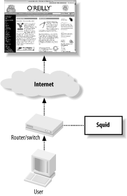
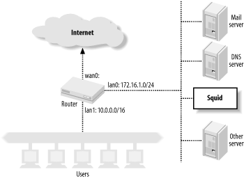
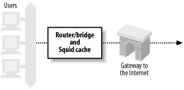
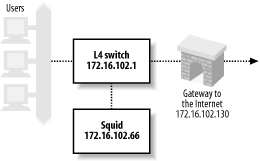
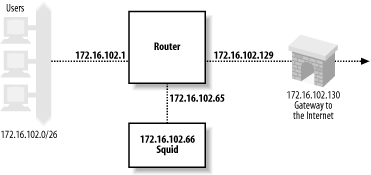

第9章 Cache拦截
Cache拦截是让传输流向Squid的流行技术，它不用配置任何客户端。你可以配置路由器或交换机将HTTP连接转发到squid运行的主机。squid运行的操作系统被配置成接受外部数据包，并将其递交给squid进程。为了让HTTP拦截生效，你必须配置3个独立的因素：网络设备，squid运行的操作系统，和squid自身。
（译者注：Cache拦截实际上指的是Squid的透明代理）
9.1它如何工作？
Cache拦截包含了某些网络欺骗，它对理解在客户端和Squid之间的会话有用。我使用图9-1和如下的tcpdump示例输出，来解释当数据包通过网络时，如何被拦截。
Figure 9-1. How HTTP interception works
1.用户代理(user-agent)想请求某个资源，它对原始服务器发起index.html请求，例如：www.oreilly.com。它需要原始服务器的IP地址，所以先发起一个DNS请求：
Packet 1
TIME: 19:54:41.317310
UDP: 206.168.0.3.2459 -> 206.168.0.2.53
DATA: .d...........www.oreilly.com.....
---------------------------------------------------------------------------
Packet 2
TIME: 19:54:41.317707 (0.000397)
UDP: 206.168.0.2.53 -> 206.168.0.3.2459
DATA: .d...........www.oreilly.com.............PR.....%........PR.
....$........PR...ns1.sonic.net.........PR...ns2.Q........PR
...ns...M...............h.............!.z.......b......
2.现在有了IP地址，用户代理初始化到原始服务器80端口的TCP连接：
Packet 3
TIME: 19:54:41.320652 (0.002945)
TCP: 206.168.0.3.3897 -> 208.201.239.37.80 Syn
DATA: <No data>
3.路由器或交换机注意到目的地址是80端口的TCP SYN包。下一步会发生什么依赖于特定的拦截技术。在4层交换和路由策略上，网络设备简单的将TCP包转发到Squid的数据链路地址。当squid直接挂在网络设备上时，就这样工作。对WCCP来说，路由器封装TCP包为GRE包。因为GRE包有它自己的IP地址，它可能被通过多个子网进行路由。换句话说，WCCP不要求squid直接挂在路由器上。
4.Squid主机的操作系统接受到拦截包。对4层交换来说，TCP/IP包并没有改变。假如包使用了GRE封装，主机会剥离外部的IP和GRE头部，并将原始的TCP/IP包放在输入队列里。注意squid主机接受到的包是针对外部地址的（原始服务器的）。正常情况下，这个包不匹配任何本地地址，它会被丢弃。为了让主机接受外部数据包，你必须在大多数操作系统上激活IP转发。
5.客户端的TCP/IP包被包过滤代码处理。数据包必须匹配某个规则，该规则指示内核转交这个包给squid。如果没有这样的规则，内核简单的将包按照它自己的方式转发给原始服务器，这不是你想要的。
注意SYN包的目的端口是80，但squid可能侦听在不同的端口，例如3128。包过滤规则允许你改变端口号。你不必让squid侦听在80端口。通过tcpdump，你能见到这步，因为转发的包不会再次通过网络接口代码。
即使squid侦听在80端口，包过滤器的重定向规则仍是必要的。可以让squid不在这些端口上接受拦截包。重定向规则有点神奇，它转交外部数据包给squid。
6.Squid接受到新连接的通知，它接受这个连接。内核发送SYN/ACK包返回给客户端：
Packet 4 TIME: 19:54:41.320735 (0.000083) TCP: 208.201.239.37.80 -> 206.168.0.3.3897 SynAck DATA: <No data>
就象你见到的一样，源地址是原始服务器，尽管这个包不会抵达原始服务器。操作系统只是简单的将源地址和目的地址交换一下，并将它放进响应数据包里。
7.用户代理接受到SYN/ACK包，建立起完整的TCP连接。用户代理现在相信它是连接到原始服务器，所以它发送HTTP请求：
Packet 5
TIME: 19:54:41.323080 (0.002345)
TCP: 206.168.0.3.3897 -> 208.201.239.37.80 Ack
DATA: <No data>
---------------------------------------------------------------------------
Packet 6
TIME: 19:54:41.323482 (0.000402)
TCP: 206.168.0.3.3897 -> 208.201.239.37.80 AckPsh
DATA: GET / HTTP/1.0
User-Agent: Wget/1.8.2
Host: www.oreilly.com
Accept: */*
Connection: Keep-Alive
8.Squid接受HTTP请求。它使用HTTP Host头部来转换局部URL为完整的URL。在这种情形下，可在access.log文件里见到http://www.oreilly.com。
9.从这点开始，squid正常的处理请求。一般cache命中会立刻返回。cache丢失会转发到原始服务器。
10.最后，是squid从原始服务器接受到的响应：
Packet 8
TIME: 19:54:41.448391 (0.030030)
TCP: 208.201.239.37.80 -> 206.168.0.3.3897 AckPsh
DATA: HTTP/1.0 200 OK
Date: Mon, 29 Sep 2003 01:54:41 GMT
Server: Apache/1.3.26 (Unix) PHP/4.2.1 mod_gzip/1.3.19.1a mo
d_perl/1.27
P3P: policyref="http://www.oreillynet.com/w3c/p3p.xml",CP="C
AO DSP COR CURa ADMa DEVa TAIa PSAa PSDa IVAa IVDa CONo OUR
DELa PUBi OTRa IND PHY ONL UNI PUR COM NAV INT DEM CNT STA P
RE"
Last-Modified: Sun, 28 Sep 2003 23:54:44 GMT
ETag: "1b76bf-b910-3ede86c4"
Accept-Ranges: bytes
Content-Length: 47376
Content-Type: text/html
X-Cache: MISS from www.oreilly.com
X-Cache: MISS from 10.0.0.1
Connection: keep-alive
不应该让交换机或路由器来拦截squid到原始服务器的连接。假如这种情况发生，squid结束与自己的会话，并且不能满足任何cache丢失。防止这类转发死循环的最好方法是，确认用户和squid连接到交换机或路由器的独立接口。无论何时，应该在指定接口上应用拦截规则。最明显的，不该在squid使用的接口上激活拦截。
9.2为何要（或不要）拦截？
许多单位发现，cache拦截很有用，因为他们不能，或不愿意配置所有用户的web浏览器。相对于配置成百上千台工作站来说，在单个交换机或路由器上做一点网络欺骗更容易。从我们面临的许多选择来看，cache拦截确实有好也有坏。它可能让你的生活更容易，但也许会更难。
Cache拦截的最明显的贡献是，所有HTTP请求通过squid自动离开你的网络。你不必担心配置任何浏览器，用户可能在浏览器上禁止他们的代理设置。cache拦截让网络管理员完全控制HTTP会话。你可以改变，增加，或删除squid的缓存，而不会显著影响你的用户上网冲浪。
关于HTTP拦截的主要不利点就是该技术违背了TCP/IP的标准。这些协议要求路由器或交换机转发TCP/IP包到目的IP地址里指定的主机。然而转发包到cache代理破坏了这些规则。代理伪装身份接受转交过来的连接。用户代理被欺骗了，以为它们在与真正的web服务器会话。
这样的混乱导致在老版本的Microsoft IE浏览器中产生严重问题。浏览器的Reload按钮是刷新HTML页面的最容易的方法。当浏览器被配置成使用cache代理时，reload请求包含了一个Cache-Control:no-cache头部，它强迫产生cache丢失（或cache确认），并确保响应是最近更新的。假如没有明确配置使用代理，浏览器会忽略该头部。当使用cache拦截时，浏览器认为它在连接到原始服务器，因此没必要发送该头部。在这种情形下，squid不会告知用户的Reload按钮，也许不会验证cache响应。squid的ie_refresh提供了解决此bug的局部解决方法（见附录A）。Microsoft已经在其IE 5.5 SP1中解决了这个问题。
因为类似的理由，你不能结合cache拦截使用HTTP代理验证。因为客户端不知道这个代理，它不会发送必要的Proxy-Authorization头部。另外，407（代理验证请求）响应代码也不恰当，因为响应看起来象来自原始服务器，原始服务器从来不会发送如此响应。
也不能在cache拦截中使用RFC 1413 ident查询（见6.1.2.11章节）。Squid不能对必要的IP地址建立新的TCP Socket连接。操作系统在转发拦截连接到squid时，它执行欺骗。然后，当squid希望bind新的TCP Socket到外部IP地址时，它不能执行欺骗。它想bind的地址实际上并非真正本地的，所以bind系统调用失败。
cache拦截也与设计成阻止地址欺骗的IP过滤冲突（见RFC 2267:Network Ingress Filtering: Defeating Denial of Service Attacks Which Employ IP Source AddressSpoofing）。考虑如图9-2显示的网络。路由器有2个LAN接口:lan0和lan1。网络管理员在路由器上使用包过滤器，以确保没有内部主机传送假冒源地址的数据包。路由器只会转发源地址对应相连网络的数据包。包过滤规则也许看起来如下：
# lan0 allow ip from 172.16.1.0/24 to any via lan0 deny ip from any to any via lan0 # lan1 allow ip from 10.0.0.0/16 to any via lan1 deny ip from any to any via lan1
Figure 9-2. Interception caching breaks address spoofing filters
现在看看，当路由器和lan1中的squid主机配置成拦截来自lan0中的HTTP连接后，会发生什么。Squid装扮成原始服务器，这意味着从squid到用户的响应TCP包欺骗了源地址。lan0过滤规则导致路由器拒绝这些包。为了让cache拦截生效，网络管理员须移除lan0规则。这样就让网络有漏洞，从而易遭拒绝服务攻击。
我在先前的章节里描述过，客户端在打开连接之前必须先进行DNS查询。在某些防火墙环境中，这样做可能有问题。你想进行HTTP拦截的主机必须能够查询DNS。如果客户端了解自己正使用代理（因为手工配置或代理自动配置），它通常就不去解析主机名。代替的，它简单的将完整URL转发给squid，由squid来查询原始服务器的IP地址。
另一个小问题是，squid接受任意目的IP地址的连接。例如，某个web站点当机了，但它仍然有DNS记录存在。squid伪装这个站点接受TCP连接。客户端会认为该站点仍然在运行，因为连接有效。当squid连接到原始服务器失败时，它强迫返回错误消息。
万一形势不清，HTTP拦截在初次使用时有些棘手或困难。许多不同的组件必须组合工作，并且要配置正确。甚至，从内存中恢复整个配置也很困难。我强烈建议你在将其应用于生产环境之前，先建立测试环境。一旦你让它正常运行，请记录每一步细节。
9.3 网络设备
现在你了解了cache拦截的相关细节，让我们看看如何实际让它工作。我们先配置网络设备，它们用来拦截HTTP连接。
9.3.1 内置Squid
在该配置中，你无需交换或网络路由设备来拦截HTTP连接。代替的，squid运行的Unix系统，也就是路由器（或网桥），请见图9-2。
Figure 9-3. A system that combines routing and caching can easily intercept HTTP traffic
该配置本质上跳过了9.1章的头三步。squid主机充当网络路由器，它接受HTTP连接包。假如你采用此方法，请直接跳到9.4章。
9.3.2 四层交换
许多单位使用四层交换机来支持HTTP拦截。这些产品提供更多的功能，例如健壮性检测和负载均衡。我在这里仅仅讲讲拦截。关于健壮性检测和负载均衡的信息，请见O'Reilly's Server Load Balancing and Load Balancing Servers, Firewalls, and Caches (John Wiley & Sons). 下面的章节包含了许多产品和技术的示例配置。
9.3.2.1 Alteon/Nortel
下面的配置来自ACEswitch 180和Alteon's WebOS 8.0.21。网络设置请见图9-4。
Figure 9-4. Sample network for layer four switch interception, for Alteon and Foundry examples
客户端连接到端口1，通过端口2连接到因特网，squid运行在端口3。下面的行是交换机的/cfg/dump命令的输出。你无须敲入所有这些行。甚至，在Alteon的新版软件里，某些命令可能改变了。注意Alteon把这个功能叫做Web Cache重定向（WCR）。如下是处理步骤：
- 1. 首先，你必须分配给Alteon交换机一个IP地址。这是必要的，以便交换机能检查squid的存活状态。
/cfg/ip/if 1 ena addr 172.16.102.1 mask 255.255.255.0 broad 172.16.102.255 - 2. Alteon的WCR属于服务负载均衡(SLB)配置。所以，必须使用如下命令在交换机上激活SLB功能：
/cfg/slb on - 3. 现在，用squid的IP地址定义real server:
/cfg/slb/real 1 ena rip 172.16.102.66 - 4. 必须定义一个组，并分配给real server一个组号：
/cfg/slb/group 1 health tcp add 1 - 5.
下一步定义2个过滤规则。第1条规则匹配HTTP连接（目的端口是80的TCP包），并重定向它们到组1里的server。第2条规则匹配所有其他数据包，并正常转发它们。
/cfg/slb/filt 1 ena action redir sip any smask 0.0.0.0 dip any dmask 0.0.0.0 proto tcp sport any dport http group 1 rport 0 /cfg/slb/filt 224 ena action allow sip any smask 0.0.0.0 dip any dmask 0.0.0.0 proto any - 6.
最后一步是给SLB配置指定的交换端口。在端口1上，处理客户端连接（这也是客户端连接的端口），并增加2条过滤规则。在端口2上，仅须配置它正常服务（例如，向上连接到Internet）：
cfg/slb/port 1 client ena filt ena add 1 add 224 /cfg/slb/port 2 server ena
为了验证HTTP拦截配置正确并工作良好，你可以使用/stats/slb和/info/slb菜单里的命令。/info/slb/dump是快速有效的查看整个SLB配置的方法：
>> Main# /info/slb/dump
Real server state:
1: 172.16.102.66, 00:c0:4f:23:d7:05, vlan 1, port 3, health 3, up
Virtual server state:
Redirect filter state:
1: dport http, rport 0, group 1, health tcp, backup none
real servers:
1: 172.16.102.66, backup none, up
Port state:
1: 0.0.0.0, client
filt enabled, filters: 1 224
2: 0.0.0.0, server
filt disabled, filters: empty
3: 0.0.0.0
filt disabled, filters: empty
在该输出里，注意到交换机显示Squid在端口3上可到达，并且运行正常。你也能见到过滤规则1应用到端口1。在端口状态节里，端口1定义为客户端连接端口，端口2简单的标记为服务端口。
/stats/slb/real命令显示real server(squid)的有用统计：
>> Main# /stats/slb/real 1 ------------------------------------------------------------------ Real server 1 stats: Health check failures: 0 Current sessions: 41 Total sessions: 760 Highest sessions: 55 Octets: 0
大部分统计与任务（例如TCP连接）数量相关。假如再次运行该命令，总共的任务计数会增加。最后，/stats/slb/group命令显示几乎同样的信息：
>> Main# /stats/slb/group 1
------------------------------------------------------------------
Real server group 1 stats:
Current Total Highest
Real IP address Sessions Sessions Sessions Octets
---- --------------- -------- ---------- -------- ---------------
1 172.16.102.66 65 2004 90 0
---- --------------- -------- ---------- -------- ---------------
65 2004 90 0
假如不止1个real server在组里，该输出会更有趣。
9.3.2.2 Foundry
下面的配置示例来自ServerIron XL，运行的软件版本是07.0.07T12。跟前面一样，客户端在端口1，Internet连接在端口2，squid运行在端口3。然而，这样的配置少了点东西，因为这里可以激活HTTP全局拦截。Foundry的cache拦截的名字叫做Transparent Cache Switching（TCS）。请参考图9-4。首先请给交换机分配1个IP地址，以便执行健壮性检测：
ip address 172.16.102.1 255.255.255.0
Foundry允许你在特定端口上激活或禁用TCS。然而简单起见，这里全局激活它：
ip policy 1 cache tcp http global
在该行里，cache是针对TCS功能的关键字。下1行定义web cache，我定义其名字为squid1，并且告诉交换机它的IP地址：
server cache-name squid1 172.16.102.66
最后的步骤是将web cache加进cache组里：
server cache-group 1 cache-name squid1
假如在转发连接时有问题，请参阅show cache-group命令的输出：
ServerIron#show cache-group
Cache-group 1 has 1 members Admin-status = Enabled Active = 0
Hash_info: Dest_mask = 255.255.255.0 Src_mask = 0.0.0.0
Cache Server Name Admin-status Hash-distribution
squid1 6 3
HTTP Traffic From <-> to Web-Caches
Name: squid1 IP: 172.16.102.66 State: 6 Groups = 1
Host->Web-cache Web-cache->Host
State CurConn TotConn Packets Octets Packets Octets
Client active 441 12390 188871 15976623 156962 154750098
Web-Server active 193 11664 150722 151828731 175796 15853612
Total 634 24054 339593 167805354 332758 170603710
某些输出有些模糊，但通过重复该命令，并且观察计数器的增长，你能了解拦截是否在进行。
show server real提供几乎同样的信息：
ServerIron#show server real squid1 Real Servers Info Name : squid1 Mac-addr: 00c0.4f23.d705 IP:172.16.102.66 Range:1 State:Active Wt:1 Max-conn:1000000 Src-nat (cfg:op):(off:off) Dest-nat (cfg:op):(off:off) squid1 is a TRANSPARENT CACHE in groups 1 Remote server : No Dynamic : No Server-resets:0 Mem:server: 02009eae Mem:mac: 045a3714 Port State Ms CurConn TotConn Rx-pkts Tx-pkts Rx-octet Tx-octet Reas ---- ----- -- ------- ------- ------- ------- -------- -------- ---- http active 0 855 29557 379793 471713 373508204 39425322 0 default active 0 627 28335 425106 366016 38408994 368496301 0 Server Total 1482 57892 804899 837729 411917198 407921623 0
最后，使用show logging命令来观察交换机是否显示squid正常或异常：
ServerIron#show logging ... 00d00h11m51s:N:L4 server 172.16.102.66 squid1 port 80 is up 00d00h11m49s:N:L4 server 172.16.102.66 squid1 port 80 is down 00d00h10m21s:N:L4 server 172.16.102.66 squid1 port 80 is up 00d00h10m21s:N:L4 server 172.16.102.66 squid1 is up
注意ServerIron认为服务运行在80端口。以后你会见到squid运行在3128端口的示例。包过滤规则实际上将包的目的地址从80改变为3128。这导致一些与状态检测有关的有趣结果，我在9.3.2.5节里会讲到。
9.3.2.3 Extreme Networks
在该示例里，硬件是Summit1i，软件版本是6.1.3b11。再次将客户端分配在端口1，Internet在端口2，squid在端口3。网络配置见图9-5。
Figure 9-5. Sample network for intercepting with a router, for the Extreme and Cisco policy routing examples
Extreme交换机仅仅对在不同子网间进行路由的数据包进行HTTP连接的拦截。换句话说，如果你配置Extreme交换机使用二层模式（单一VLAN里），就不能将包转发给squid。为了让HTTP拦截正常工作，必须给用户，Squid，和Internet配置不同的VLAN。
configure Default delete port 1-8 create vlan Users configure Users ip 172.16.102.1 255.255.255.192 configure Users add port 1 create vlan Internet configure Internet ip 172.16.102.129 255.255.255.192 configure Internet add port 2 create vlan Squid configure Squid ip 172.16.102.65 255.255.255.192 configure Squid add port 3
下一步是激活和配置交换机的路由：
enable ipforwarding configure iproute add default 172.16.102.130
最后，配置交换机重定向HTTP连接到Squid：
create flow-redirect http tcp destination any ip-port 80 source any configure http add next-hop 172.16.102.66
9.3.2.4 Cisco Arrowpoint
下类配置基于我以前的测试笔记。然而，最近我没有使用这类型的交换机，不能确保如下命令仍然正确：
circuit VLAN1
ip address 172.16.102.1 255.255.255.0
service pxy1
type transparent-cache
ip address 172.16.102.66
port 80
protocol tcp
active
owner foo
content bar
add service pxy1
protocol tcp
port 80
active
9.3.2.5 关于HTTP服务和健壮性检测的评论
在上面的示例里，路由器/交换机都直接转发包，不会改变目的TCP端口。在9.4章里用到的包过滤规则改变了目的端口。如果试图在同一主机上运行HTTP服务和squid，那么就产生了一个有趣的问题。
为了在3128端口运行Squid的同时，还要在80端口运行HTTP，包过滤配置必须有1条特殊的规则，它接受到本机HTTP服务的TCP连接。否则，连接会直接转交给Squid。该规则易于建立。假如目的端口是80，并且目的地址是服务器的，那么主机正常接受这个包。然而所有的拦截包有外部目的地址，所以它们不会匹配该规则。
然而，当路由器/交换机进行HTTP健壮性检测时，它连接到服务器的IP地址。这样，健壮性检测的数据包匹配了上述规则，它不会转交给Squid。路由器/交换机检测了错误的服务。假如HTTP服务down掉了，而squid还在运行，那健壮性检测就产生错误结果。
解决这个问题的一些选择是：
- 1.不要在Squid主机上运行HTTP服务；
- 2.增加1条特殊的包过滤规则，将来自路由器/交换机的状态检测的包转交给squid；
- 3.配置路由器/交换机，改变目的端口为3128；
- 4.禁止4层状态检测。
9.3.3 Cisco策略路由
策略路由与4层交换并非不同。它在Cisco和其他公司的路由产品上执行。主要的区别是策略路由不包括任何健壮性检测。这样，假如squid超载或完全不可响应，路由器还会继续转发包到squid，而不是将包路由到原始服务器。策略路由要求squid位于路由器直接相连的子网中。
在本示例里，使用了Cisco 7204路由器，运行IOS Version 12.0(5)T。网络配置与前面的一样，见图9-5。
首先的配置步骤是定义访问列表，匹配来自客户端的到80端口的数据包。必须确保Squid发起的到80端口的数据包不会被再次拦截。做到这点的方法之一是，定义1个特殊规则，拒绝来自squid的数据包，紧跟1条规则允许所有其他的数据包：
access-list 110 deny tcp host 172.16.102.66 any eq www access-list 110 permit tcp any any eq www 另外，如果Squid和用户位于不同的子网，你可以仅仅允许来自用户所在网络的数据包： access-list 110 permit tcp 10.102.0.0 0.0.255.255 any eq www
下一步是定义路由映射。在这里你告诉路由器转发拦截包到何处去：
route-map proxy-redirect permit 10 match ip address 110 set ip next-hop 172.16.102.66
这些命令表明，“假如IP地址匹配访问列表110，就转发该包到172.16.102.66”。在route-map行的数字10是一个序列号，假如你有多个路由映射的话。最后一步是应用路由映射到客户端连接的接口：
interface Ethernet0/0 ip policy route-map proxy-redirect
IOS不对策略路由提供很多调试方法。然而，show route-map命令足够可用：
router#show route-map proxy-redirect
route-map proxy-redirect, permit, sequence 10
Match clauses:
ip address (access-lists): 110
Set clauses:
ip next-hop 172.16.102.66
Policy routing matches: 730 packets, 64649 bytes9.3.4 Web Cache Coordination协议
Cisco对4层交换技术的响应叫做Web Cache Coordination Protocol(WCCP).WCCP在许多方面与典型的4层拦截不同。
首先，拦截包被封装在GRE（路由封装类）里。这点允许数据包跨子网传输，也就意味着squid不必直接连在路由器上。因为数据包是封装的，squid主机必须对其进行解包。并非所有的Unix系统有解开GRE包的代码。
第二个不同是，路由器如何决定将负载分摊到多个cache上。事实上，路由器不做这个决定，由cache来做。当路由器有一组支持WCCP的cache时，其中一个cache主动成为组的领导。由领导cache来决定如何分摊负载和通知路由器。在路由器重定向然任何连接之前，这是一个额外的必要步骤。
因为WCCP使用GRE，路由器可能强迫要求将来自HTTP请求的大TCP包分割成片断。幸运的是，这点不会经常发生，因为大部分HTTP请求比以太网MTU size（1500字节）要小。默认的TCP和IP包头部是20字节，这意味着以太网帧能实际携带1460字节的数据。GRE封装在GRE头部增加了20字节，另外在第二个IP头部增加了20字节。这样来自客户端的正常的1500字节的TCP/IP包，在封装后变成了1540字节。这样数据包就太大而不能在单个以太网帧里传输，所以路由器将原始包分割成两个片断。
9.3.4.1 WCCPv1
该节的配置示例在运行IOS Version 12.0(5)T的Cisco 7204路由器上测试。网络配置跟图9-5同。
首先，在IOS配置中输入如下两行，激活路由器的WCCP:
ip wccp version 1 ip wccp web-cache
接着，必须在单独的路由器接口上激活WCCP。在HTTP包离开路由器的接口上激活WCCP，也就是路由器连接到外部原始服务器或Internet网关的接口：
interface Ethernet0/1 ip address 172.16.102.129 255.255.255.192 ip wccp web-cache redirect out
请确认保存了配置改变。
你也许想使用访问列表来阻止某些web站点的拦截。可以使用访问列表来防止循环转发。例如：
! don't re-intercept connections coming from Squid: access-list 112 deny tcp host 172.16.102.66 any eq www ! don't intercept this broken web site access-list 112 deny tcp any 192.16.8.7 255.255.255.255 eq www ! allow other HTTP traffic access-list 110 permit tcp any any eq www ip wccp web-cache redirect-list 112
路由器不发送任何数据到squid，直到squid宣称它自己是路由器。我在9.5.1节里解释如何配置squid的WCCP。
9.3.4.2 WCCPv2
当前标准的Squid发布仅支持WCCPv1。然而，可在http://devel.squid-cache.org/找到WCCPv2的补丁。该代码仍是实验性的。注意从路由器发送到Squid的GRE包，包含了额外的4个字节。WCCPv2在GRE头部和封装的IP包之间，插入了一个重定向头部。也许需要修改内核代码来计算这个额外的头部。
9.3.4.3 调试
IOS提供许多命令来监视和调试WCCP。show ip wccp web-cache命令提供一些基本的信息：
router#show ip wccp web-cache
Global WCCP information:
Router information:
Router Identifier: 172.16.102.129
Protocol Version: 1.0
Service Identifier: web-cache
Number of Cache Engines: 1
Number of routers: 1
Total Packets Redirected: 1424
Redirect access-list: -none-
Total Packets Denied Redirect: 0
Total Packets Unassigned: 0
Group access-list: -none-
Total Messages Denied to Group: 0
Total Authentication failures: 0
欲了解更多细节，在前叙命令后加一个detail单词：
router#show ip wccp web-cache detail
WCCP Cache-Engine information:
IP Address: 172.16.102.66
Protocol Version: 0.4
State: Usable
Initial Hash Info: 00000000000000000000000000000000
00000000000000000000000000000000
Assigned Hash Info: FFFFFFFFFFFFFFFFFFFFFFFFFFFFFFFF
FFFFFFFFFFFFFFFFFFFFFFFFFFFFFFFF
Hash Allotment: 256 (100.00%)
Packets Redirected: 1424
Connect Time: 00:17:40
这里可以看到squid的IP地址和状态。假如不止一个cache与路由器会话，那么hash分配信息看起来不同。大多数情况下，每个cache接受到相等的hash值。
注意第二条命令输出的协议版本值，与第一条命令的不一样。不幸的是，赋予了版本号太多的意义。show ip wccp web-cache命令看起来报告WCCP协议的主版本号（例如1或2），然而show ip wccp web-cache detail的版本号看起来匹配Squid的wccp_version指令的值。
9.4 操作系统配置
为了让cache拦截正常工作，必须在操作系统中激活某些网络功能。首先，必须激活IP包转发。这就允许操作系统接受目的地址是外部IP的数据包。接着，必须激活和配置内核中的相关代码，以重定向外部包到Squid。
9.4.1 Linux
本节的指导适合2.4系列Linux内核。我使用RedHat Linux7.2（内核是2.4.7-10）。假如你使用的版本不同，那可能不能运行。建议搜索下Squid的FAQ或其他地方，找到关于内核的更新的或历史的信息。
在我测试iptables过程中，不必激活IP转发。然而，你也可以试试在一开始就激活它，并在一切运行良好后，看看能否禁掉它。激活包转发的最好的方法是在/etc/sysctl.conf文件里增加如下行：
net.ipv4.ip_forward = 1
一般来说，在HTTP拦截生效前，不必编译新内核。假如你不知道如何配置和创建新Linux内核，请参阅O'Reilly's Running Linux by Matt Welsh, Matthias Kalle Dalheimer, and Lar Kaufman。当你配置内核时，请确认如下选项被激活：
o General setup
Networking support (CONFIG_NET=y)
Sysctl support (CONFIG_SYSCTL=y)
o Networking options
Network packet filtering (CONFIG_NETFILTER=y)
TCP/IP networking (CONFIG_INET=y)
Netfilter Configuration
Connection tracking (CONFIG_IP_NF_CONNTRACK=y)
IP tables support (CONFIG_IP_NF_IPTABLES=y)
Full NAT (CONFIG_IP_NF_NAT=y)
REDIRECT target support (CONFIG_IP_NF_TARGET_REDIRECT=y)
o File systems
/proc filesystem support (CONFIG_PROC_FS=y)
另外，请确认该选项没被激活：
o Networking options
Fast switching (CONFIG_NET_FASTROUTE=n)
重定向外部数据包到squid的代码是Netfilter软件的一部分。如下是发送HTTP拦截连接到squid的规则：
iptables -t nat -A PREROUTING -i eth0 -p tcp --dport 80 -j REDIRECT --to-port 3128
Linux内核维护许多不同的tables。-t nat选项表明我们正在修改NAT（网络地址转换）表。本质上，我们使用iptables将原始服务器的TCP/IP地址转换为squid的本地TCP/IP地址。
每个iptables表有许多链。-A PREROUTING表明我们增加了一条规则到内建的链叫做PREROUTING。PREROUTING链仅对从外部网络进入系统的数据包有效。
接下来的三个选项决定哪个包匹配该规则。-i eth0选项限制规则仅对eth0接口上接受的数据包有效。-p tcp选项指定TCP包，--dport 80指定包的目的端口是80。假如这三个条件都是true，那么包匹配该规则。
-j REDIRECT选项表明对匹配规则的包，采取何种动作。REDIRECT是内建的动作名，它导致iptables改变包的目的地址为127.0.0.1。--to-port 3128选项也指示iptables改变目的TCP端口为3128。
假如你在squid主机上运行HTTP服务（例如Apache），就必须增加另外的iptables规则。该必要规则允许连接到HTTP服务。否则，REDIRECT规则导致iptables转发连接到squid的3128端口。可以使用-I选项在列表顶部插入一条新规则：
iptables -t nat -I PREROUTING -i eth0 -p tcp -d 172.16.102.66 --dport 80 -j ACCEPT
一旦确认所有iptables规则工作正确，记得运行如下命令来保存配置：
/sbin/service iptables save
将当前规则保存到/etc/sysconfig/iptables，当系统重启时，这些规则自动载入。
9.4.1.1 Linux和WCCP
2.4版本的Linux内核自带1个GRE伪装接口。然而，它不能解码WCCP任务里封装的GRE包。问题看起来在于路由器设置了WCCP/GRE包的协议类型域为0x883E。Linux的GRE驱动不知道如何处理这类型包，因为它不了解0x883E类型的协议。
可以试试给Linux打GRE模块的补丁，以便它能在WCCP下工作。Squid FAQ包含了对这个补丁的链接。然而，假如使用WCCP指定的Linux模块，事情会容易些。可以在这里找到它：http://www.squid-cache.org/WCCP-support/Linux/ip_wccp.c
必须编译ip_wccp.c文件为可装载内核模块。有点棘手的是，依赖于内核版本的不同，编译选项可能不同。你可以进入内核源代码目录，敲入make modules并观察编译器命令的滚动。然后拷贝这些命令中的一个，然后改变最后一个参数为ip_wccp.c。如下是我在2.4.7-10 Linux内核中使用的命令:
% gcc -Wall -D_ _KERNEL_ _ -I/usr/src/linux-2.4.7-10/include \ -DMODULE -DMODVERSIONS -DEXPORT_SYMBAB \ -include /usr/src/linux-2.4.7-10/include/linux/modversions.h \ -O2 -c ip_wccp.c
gcc命令在当前目录会生成ip_wccp.o文件。下一步使用insmod命令，装载模块到内核中：
# insmod ip_wccp.o
注意ip_wccp模块接受来自任何源地址的GRE/WCCP包。换句话说，恶意用户可能发送数据到squid cache。假如使用该模块，应该安装一条iptables规则，拒绝外部的GRE包。例如：
# iptables -A INPUT -p gre -s 172.16.102.65 -j ACCEPT # iptables -A INPUT -p gre -j DROP
不要忘记敲入/sbin/service iptables save命令来保存配置。
9.4.2 FreeBSD
本节的例子基于FreeBSD-4.8,并可以在任何FreeBSD-4和5系列的后续版本上运行。要激活IP包转发，在/etc/sysctl.conf中增加如下行：
net.inet.ip.forwarding=1
需要在内核中激活2个特殊选项。假如你不知道如何编译内核，参见FreeBSD Handbook第9章(http://www.freebsd.org/handbook/index.html). 编辑内核配置文件，确保有如下行：
options IPFIREWALL options IPFIREWALL_FORWARD
假如squid主机位于无人照看的机房中，我也推荐使用IPFIREWALL_DEFAULT_TO_ACCEPT选项。假如你被防火墙的规则困扰，仍然可以登陆系统中。ipfw命令告诉内核重定向拦截连接到squid:
/sbin/ipfw add allow tcp from 172.16.102.66 to any out /sbin/ipfw add allow tcp from any 80 to any out /sbin/ipfw add fwd 127.0.0.1,3128 tcp from any to any 80 in /sbin/ipfw add allow tcp from any 80 to 172.16.102.66 in
第一条规则匹配squid主机发起的数据包。它确保外出的TCP连接不会被重新定向回squid。第二条规则匹配squid响应客户端的数据包。我在这里列出它，因为随后会有另外的ipfw规则，这些规则会拒绝这些包。第三条规则实际重定向进来的连接到squid。第四条规则匹配从原始服务器返回squid的数据包。这里又一次假设随后会有相应的拒绝规则。
假如在squid主机上运行HTTP服务，就必须增加另外的规则，它放过，而不是重定向，目的地址是原始服务器的TCP包。下列规则在fwd规则之前：
/sbin/ipfw add allow tcp from any to 172.16.102.66 80 in
FreeBSD典型的将ipfw规则存储在/etc/rc.firewall里。一旦你确认规则设置正确，记得保存它们。将如下行加入/etc/rc.local文件，让FreeBSD在启动时自动运行/etc/rc.firewall脚本。
firewall_enable="YES"
9.4.2.1 FreeBSD和WCCP
FreeBSD版本4.8和后续版本内建了对GRE和WCCP的支持。早期的版本需要补丁，你可以在这里找到: http://www.squid-cache.org/WCCP-support/FreeBSD/ . 内建代码的性能非常好，它是真正的内核组织编写的。可能也需要编译支持GRE的新内核。将如下行加入内核配置文件里：
pseudo-device gre
对Freebsd-5，使用device代替了pseudo-device。当然，你也需要前面章节里提到的FIREWALL选项。
在安装和重启了新内核后，必须配置GRE通道来接受来自路由器的GRE包。例如：
# ifconfig gre0 create # ifconfig gre0 172.16.102.66 172.16.102.65 netmask 255.255.255.255 up # ifconfig gre0 tunnel 172.16.102.66 172.16.102.65 # route delete 172.16.102.65
ifconfig命令在gre0接口上，增加了一个到路由器（172.16.102.65）的路由表入口。我发现必须删除该路由，以便squid能与其他路由器会话。
你也许想或必须对来自路由器的GRE包，增加一条ipfw规则：
/sbin/ipfw add allow gre from 172.16.102.65 to 172.16.102.66
9.4.3 OpenBSD
本节的示例基于OpenBSD 3.3。
为了激活包转发，在/etc/sysctl.conf文件里增加该行：
net.inet.ip.forwarding=1现在，在/etc/pf.conf文件里增加如下类似行，配置包过滤规则：
rdr inet proto tcp from any to any port = www -> 127.0.0.1 port 3128 pass out proto tcp from 172.16.102.66 to any pass out proto tcp from any port = 80 to any pass in proto tcp from any port = 80 to 172.16.102.66
假如你没有使用OpenBSD的包过滤器，需要在/etc/rc.conf.local文件里增加一行来激活它：
pf=YES
9.4.3.1 OpenBSD和WCCP
首先，增加如下行到/etc/sysctl.conf文件，告诉系统接受和处理GRE和WCCP包：
net.inet.gre.allow=1 net.inet.gre.wccp=1
然后，用如下命令配置GRE接口：
# ifconfig gre0 172.16.102.66 172.16.102.65 netmask 255.255.255.255 up # ifconfig gre0 tunnel 172.16.102.66 172.16.102.65 # route delete 172.16.102.65
跟Freebsd一样，我发现必须删除ifconfig自动产生的路由。最后，依赖于包过滤器的配置，必须增加一条规则以允许GRE包：
pass in proto gre from 172.16.102.65 to 172.16.102.66
9.4.4 在NetBSD和其他系统上的IPFilter
本节的示例基于NetBSD 1.6.1。它们也能运行在Solaris,HP-UX,IRIX,和Tru64上，既然这些系统本身就配备了IPFilter.
激活NetBSD的包转发，将如下行加进/etc/sysctl.conf:
net.inet.ip.forwarding=1
然后，将如下行插入NAT配置文件/etc/ipnat.conf中：
rdr fxp0 0/0 port 80 -> 172.16.102.66 port 3128 tcp
你的接口名可能与本例的fxp0不同。
9.4.4.1 NetBSD和WCCP
我不能在NetBSD上运行WCCP，即使打了GRE补丁来接受WCCP包。该问题看起来根源在IPFilter rdr规则阻塞了特定的端口。来自路由器的包通过NetBSD的gre0接口（在这里它们被解包）。然而，包回到路由器时，走另一条通道，未被封装并且不走同一网络接口。这样，IPFilter代码没有将squid的本地IP地址转换回原始服务器的地址。
9.5 配置Squid
假如你使用Linux 2.4和iptables，在运行./configure时，可使用--enable-linux-netfilter选项。它激活某些Linux的特殊代码，以发现发起请求的原始服务器的IP地址。Squid正常情况下从Host头部，得到原始服务器的名字（和/或地址）。--enable-linux-netfilter功能仅对没有Host头部的请求来说是必要的。统计显示几乎所有的请求有Host头部，所以实际中可以不使用--enable-linux-netfilter选项。
假如正在使用IPFilter包（NetBSD,Solaris,或其他），因为同样的理由，你应该使用--enable-ipf-transparent选项。在OpenBSD上，请使用--enable-pf-transparent选项。每次运行./configure时，必须重编译squid,见3.8章的描述。
在运行了./configure和重编译了squid后，可以编辑squid.conf文件。作为起点，请确认下列指令定义了给定的值：
httpd_accel_host virtual httpd_accel_port 80 httpd_accel_uses_host_header on httpd_accel_with_proxy on httpd_accel_single_host off
http_accel_host指令是关键。它指示squid接受包含局部URI的HTTP请求。httpd_accel_uses_host_header被激活，允许squid使用Host头部来重新构建完整URI。virtual关键字指示squid在缺乏Host头部时，将原始服务器的IP地址放进URL里。
httpd_accel_with_proxy指令控制squid是否既接受HTTP服务（部分URI）请求，又接受代理（完整URI）请求。在cache拦截里，它应该被激活。如果没有用户明确的配置使用squid做代理，那即使httpd_accel_with_proxy没被激活，squid也能工作。
httpd_acces_single_host指令正常情况下被禁止，在早期版本的squid里，它可能被默认激活。在cache拦截里，它应明确被禁止。
假如拦截不止针对80端口，你也许该将httpd_accel_port设为0。见附录A的更多信息。
假如你没有使用WCCP，就该准备开始发起拦截会话到squid了。通过使用浏览器来上网冲浪，或者使用squidclient发起测试请求，就可以放手一试。假如你使用WCCP，那么还有许多步骤要完成。
9.5.1 配置WCCPv1
路由器不发送任何会话到squid，直到squid宣称它自己是路由器。为了让squid那样做，在squid.conf中增加如下行：
wccp_router 172.16.102.65 wccp_version 4
路由器有多个接口。请确认使用与squid相连的接口的IP地址。这点是必要的，因为来自路由器的WCCP消息，将源IP地址设置为外出接口的地址。假如源地址不匹配wccp_router值，squid会拒绝WCCP消息。
WCCPv1文档规定4作为协议版本号。然而，某些用户报告，Cisco IOS 11.2仅支持协议版本3。假如你使用该版本的IOS，请在squid.conf里改变版本号：
wccp_version 3
9.6 调试问题
HTTP拦截比较复杂，因为许多不同设备必须组合正确工作。为了帮助你跟踪问题，如下是一个问题解答检查列表：
- * 客户端数据包正在通过路由器/交换机吗？
- 在简单网络里，这点显而易见。你可以trace线缆并观察指示灯的活动闪烁。然而在大而复杂的网络，数据包可能走不同的路线。假如你的组织够大，并有网络sniffer设备，就可以观察线路中web客户端的请求数据包。低技术的方法是，断开有问题的线路，并观察是否影响客户端的web浏览。
- * 路由器/交换机配置是否正确？
- 你也许要再次检查路由器/交换机配置。假如你已配置了某个接口，那能否确保它正确呢？是否新的配置真正在设备上运行？也许在你保存配置之前，路由器/交换机已重启了。在改变生效前，你或许需要reboot设备。
- * 交换机/路由器能与squid主机会话吗？
- 能从路由器/交换机上ping通squid吗？大部分4层拦截配置要求网络设备和squid在同一子网里。登陆路由器/交换机，确认能ping通squid的IP地址。
- * 交换机/路由器相信squid在运行吗？
- 许多传输拦截设备不会发送会话到squid，除非它们知道squid是健壮的。使用调试命令来预览squid的健壮性状态。也许会发现三层健壮性检测（例如ICMP
ping）比四层检测（例如HTTP）更容易，它使网络设备更容易将squid标记为存活状态。
- * Squid实际在运行吗?
- 请再次确认squid真正在运行，特别是在系统近期重启过的情况下。
- * 数据包正在抵达squid主机吗？
- 使用tcpdump能见到拦截的TCP连接。如下是示例：
# tcpdump -n -i eth0 port 80
假如使用WCCP，请检查来自路由器的GRE包：# tcpdump -n -i eth0 ip proto gre
假如没有看到tcpdump的任何输出，则路由器/交换机可能没有发送任何数据。在这种情况下，返回到以前的建议。 注意，假如设备正使用四层健壮性检测，你可以在tcpdump的输出里见到这些。健壮性检测来自路由器/交换机的IP地址，所以它们容易被认出。假如你见到健壮性检测，但没有其他数据，那可能意味着路由器/交换机正把squid的响应理解为不健壮。例如，设备可能想见到200(OK)响应，但squid返回一个错误，例如401（未授权）或404（未发现）。请对access.log运行tail -f命令。 - * 激活了IP转发吗？
- 请再次确认squid运行的操作系统配置了IP包转发。假如没有，主机可能会丢弃拦截数据包，因为目的IP地址并非本地。
- * 配置包过滤了吗？
- 请确认包过滤器（例如ipfw,iptables,pf等）配置正确。当每件事都运行良好时，你能定期运行命令来显示过滤规则，并观察计数器增长。例如：
# ipfw show 300 ; sleep 3; ipfw show 300 00300 86216 8480458 fwd 127.0.0.1,3128 tcp from any to any 80 in 00300 86241 8482240 fwd 127.0.0.1,3128 tcp from any to any 80 in
注意该示例在FreeBSD上，包和字节计数器（第二和第三列）正在增长。 - * 环路接口起来和配置了吗？
- 假如有一条规则转发/重定向包到127.0.0.1，请确认环路接口（例如lo0,lo等）起来了，并配置过它。假如没有，内核简单的跳过这条转发/重定向规则。
- * WCCP/GRE包被正确解开了吗？
- 假如使用WCCP，请确认GRE包被正确解开。假如因为某些理由，系统不知道该如何处理GRE包，那就在netstat
-s的输出里会见到"unknown/unsupported protocol"计数器在增长。
# netstat -s | grep unknown 46 packets for unknown/unsupported protocol假如OS有GRE接口，请频繁运行netstat -i命令，观察不断增长的包数量：# netstat -in | grep ^gre0 Name Mtu Network Address Ipkts Ierrs Opkts Oerrs Coll gre0 1476 <Link#4> 304452 0 0 4 0
另外，在GRE接口上运行tcpdump：# tcpdump -n -i gre0
- * Squid能响应客户端吗？
- 有可能路由器/交换机能发送包到squid，但squid不能将包发送回客户端。这种情况可能发生在：防火墙过滤规则拒绝外出数据包，或squid没有到客户端IP地址的路由。为了检查这种情况，请运行netstat
-n并观察SYN_RCVD状态的sockets:
% netstat -n Active Internet connections Proto Recv-Q Send-Q Local Address Foreign Address (state) tcp4 0 0 10.102.129.246.80 10.102.0.1.36260 SYN_RCVD tcp4 0 0 10.102.129.226.80 10.102.0.1.36259 SYN_RCVD tcp4 0 0 10.102.128.147.80 10.102.0.1.36258 SYN_RCVD tcp4 0 0 10.102.129.26.80 10.102.0.2.36257 SYN_RCVD tcp4 0 0 10.102.129.29.80 10.102.0.2.36255 SYN_RCVD tcp4 0 0 10.102.129.226.80 10.102.0.1.36254 SYN_RCVD tcp4 0 0 10.102.128.117.80 10.102.0.1.36253 SYN_RCVD tcp4 0 0 10.102.128.149.80 10.102.0.1.36252 SYN_RCVD
假如你看到这些，请使用ping和traceroute来确认squid能与客户端双向通信。 - * Squid能与原始服务器会话吗？
- 假如squid不能连接到原始服务器，拦截HTTP连接会无法进行。如果这点发生，netstat会显示许多连接在SYN_SENT状态：
% netstat -n Active Internet connections Proto Recv-Q Send-Q Local Address Foreign Address (state) tcp4 0 0 172.16.102.66.5217 10.102.129.145.80 SYN_SENT tcp4 0 0 172.16.102.66.5216 10.102.129.224.80 SYN_SENT tcp4 0 0 172.16.102.66.5215 10.102.128.71.80 SYN_SENT tcp4 0 0 172.16.102.66.5214 10.102.129.209.80 SYN_SENT tcp4 0 0 172.16.102.66.5213 10.102.129.62.80 SYN_SENT tcp4 0 0 172.16.102.66.5212 10.102.129.160.80 SYN_SENT tcp4 0 0 172.16.102.66.5211 10.102.128.129.80 SYN_SENT tcp4 0 0 172.16.102.66.5210 10.102.129.44.80 SYN_SENT tcp4 0 0 172.16.102.66.5209 10.102.128.73.80 SYN_SENT tcp4 0 0 172.16.102.66.5208 10.102.128.43.80 SYN_SENT
再次用ping和traceroute来确认squid能与原始服务器会话。 - * 外出连接正被拦截吗？
- 假如squid能ping通原始服务器，并且仍然见到大量的连接在SYN_SENT状态，那么路由器/交换机可能正在拦截squid的外出TCP连接。在某些情况下，squid能检测到这种转发循环，并写警告日志到cache.log。如此的转发死循环能迅速耗光squid的所有文件描述符，这样也会在cache.log里产生警告。
假如你怀疑这个问题，请使用squidclient程序来发起一些简单的HTTP请求。例如，该命令发起一条直接到原始服务器的HTTP请求：
% /usr/local/squid/bin/squidclient -p 80 -h slashdot.org /
假如该命令成功，你可以在屏幕上见到来自Slashdot站点的许多难看的HTML。然后通过squid来试试同样的请求：
% /usr/local/squid/bin/squidclient -r -p 3128 -h 127.0.0.1 http://slashdot.org/
假如没有在cache.log里看到错误消息，就可以再次在屏幕上看到一些HTML。假如看到转发循环错误，就必须重新配置交换机/路由器，以便它允许squid的外出连接正常通过，而不被拦截。